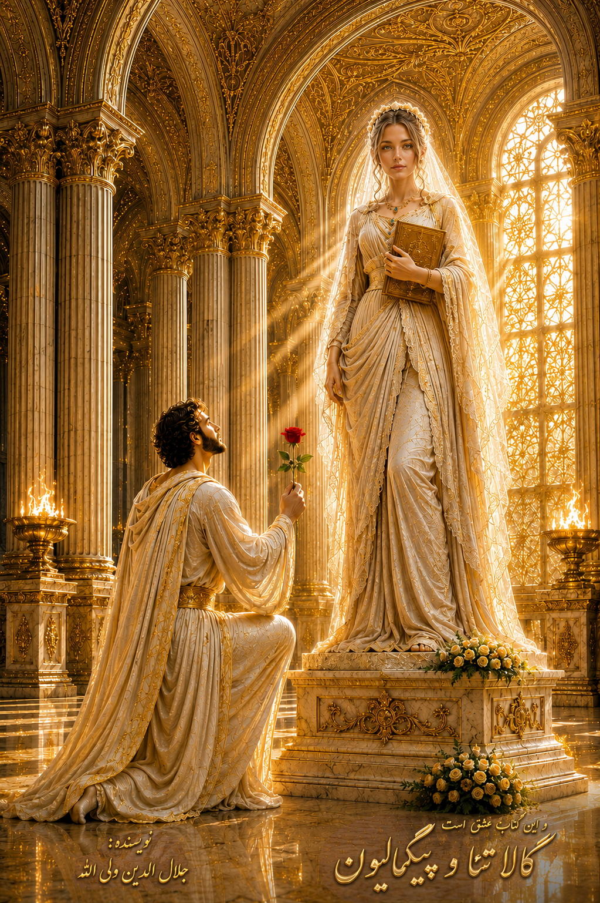

Part One

The introduction to Part One will be added here.
Digital Edition — Part One
Purchase & Download PDF

| Title | And This Is the Book of Love: Galatea and Pygmalion |
| Author | Jalaleddin Valiallah |
| Publisher | Salihin Publications |
| Place of Publication | Tehran |
| Publication Year | 1405 |
| ISBN | 978-622-87864-9-0 |
| Length | 550 pages |
| Language | Persian |
| Subjects | Persian Fiction — 21st Century; Love — Fiction |
And This Is the Book of Love is a book with an international perspective on love. What is love? What views and definitions of love have human beings developed? What relationship exists between love and marital relationships? Is love merely sexual pleasure? Whether in the love between two lovers, or in the love of humanity and the moral advancement of human society, what obstacles stand in the way of attaining love?
Does a greater degree of intellectual and emotional maturity make human love more genuine and profound? What relationship exists between individual development, the development of human societies and civilization, and love?
What is imaginal love? Can imaginal love contribute to the intellectual and rational development of human beings and to the deepening of their feelings and emotions? Just as human beings pass through stages of physical growth, are there also stages of intellectual and spiritual development in their understanding and experience of love?
What psychological role does love play in bringing peace to the human mind and soul? Can love become the driving force that awakens the hidden powers within human beings and enables them to build a life and fulfill its necessities? Is love a source of strength and a force that gives life?
Just as love can build and smooth the foundations of married life, can it also serve as the foundation for the creation of an ideal society and the higher aspirations of human communities? How can love become universal?
What is beauty? Why does every person have his or her own understanding and definition of beauty? Is beauty itself a virtue? What are imaginary and pathological forms of love? Can love itself become a psychological illness?
What relationship exists between purity, virtue, piety, and genuine love? Is love flowing through every particle of the universe? What role do stories, tales, and novels play in shaping the structures of human imagination and thought?
Did the development of humankind begin at the point when human beings started telling stories about their experiences and passing those stories from one generation to the next?
Is there any meaningful difference between our brains and the brain of Plato, or between our feelings and those of Plato and Aristotle? What part of human knowledge is covered by stories and narratives? What relationship exists between art and love? What relationship exists between reason and love? Where does the ultimate spiritual delight of love lead?
Can love heal many of the wounds of society and the individual, or is this merely poetic exaggeration? What effect does exaggeration have in moving human beings toward action? What is destiny, and upon what does it depend? What role do freedom and free will play in human development? What relationship exists between independence, freedom, and the elevation of love?
These, and many other questions, are explored in this book, with some of them finding their answers through its stories, reflections, and journeys.
The book portrays the stages of development of a young sculptor named Pygmalion. Through the seven stages of love, from children's tales and imaginative surreal stories to social events and the exploration of social problems and obstacles to progress, the book is filled with stories of love and fidelity, wisdom and counsel, and possible paths out of intellectual, psychological, and social dead ends.
“There is but one story of love;
yet I marvel at all who tell it as though it were new.”
— Hafez
And This Is the Book of Love. It is a story of love and devotion, intoxication and separation, presence and absence, tranquility and restlessness. It is the sorrow of separation and the joy of reunion. It is a reflection on the continuity of existence and life.
It is the manifestation of the beloved in countless forms: the lines, colors, marks, and beauty of the one who brings peace to the heart. It is the heart longing, trembling, and restless for the beloved. It is a remembrance of the voice of love.
“I have heard nothing more beautiful than the voice of love,
a remembrance that may remain beneath this revolving dome.”
— Rumi
The myth of Pygmalion is one of the most fascinating stories of ancient Greece and has continually inspired artists, writers, and thinkers. It tells of Pygmalion, a Cypriot king and skilled sculptor who, because of his perfectionism and profound devotion to art, falls in love not with a real human being but with a work he has created himself.
The story of Galatea and Pygmalion is the first story of love in our world. In truth, the story of Galatea and Pygmalion is the story of all of us.
Each of us carries within ourselves the image of a beautiful and unique being, something seemingly placed within our existence from the beginning. Our restlessness is born from separation from this image and from our search for it.
Galatea and Pygmalion exist within each person as a particular being, corresponding to that person's nature and inner world. If we are men, the image may appear as a woman; if we are women, it may appear as a man. It is a beautiful image within our being and unconscious mind that we spend our lives seeking.
Even if we find it and live happily and lightly beside it for a lifetime, at the end of the journey our hearts become restless again, as though the passing of a lifetime had been no more than the blink of an eye.
Why are we restless? Because another image remains within our soul and heart, and we are journeying toward it. It is the most beautiful of all ideals, a goddess beyond whom there seems to be no greater beauty—an ideal of which every person carries an image within the mind.
The story of Pygmalion and Galatea knows neither time nor place. Although it takes the form of one of the legends and myths of ancient Greece, it is a universal and transnational story belonging to all peoples and cultures.
For this reason, the story in this book is presented in a cosmopolitan form, intended to awaken a sense of belonging in readers everywhere. It is the story of humanity. It is the story of love and devotion. Love and devotion are an eternal and universal story.
The story of love is the story of all of us. As you read this book, you may remember days gone by: the memory of a love, or loves, you once experienced; the memory of youth and dreams of immortality, the excitement and intoxication of youth, and its lightness of spirit.
And if you are young, you may find yourself wondering how you will meet Love, now and in the future, and how you might act so that the memory becomes one that remains with you throughout your life.
Love is an essence woven into the being of every one of us. This is the story of Pygmalion's love for Galatea. What is the story of your love?
Many versions of this story have been told in the past. Each narrator has approached it according to his or her own vision of the world. Perhaps in the future, people in other times and other places will tell other versions of the same story. But this is my version.
In the earliest known version, written by the Roman poet Ovid in the eighth year of the Common Era in his Metamorphoses, Pygmalion cannot find the woman he desires. Losing hope of finding her, he turns toward creating a sculpture that corresponds to his expectations of an ideal woman.
He falls in love with a figure that has emerged from his own mind, which he himself has carved, refined, shaped, and adorned.
In the nineteenth century, the English writer Bernard Shaw offered another interpretation of the story, reflecting the newly emerging class structure of his time. In Shaw's version, virtue is understood through the customs and manners of the English aristocracy of that period.
In Iran, Sadegh Hedayat wrote a nihilistic interpretation of the story in The Doll Behind the Curtain. His narrative leads to a tragic ending through the experience of meaninglessness, isolation, illusion, and escape into destructive fantasies.
This is not to say that Sadegh Hedayat himself was an advocate of nihilism. Rather, the story suggests that the extreme rejection of society and excessive individualism can ultimately lead to emptiness.
The French painter and sculptor Jean-Léon Gérôme also created a celebrated work based on this myth. Pygmalion and Galatea (Pygmalion et Galatée) is a renowned work created by Gérôme in 1890. The painting is now held by The Metropolitan Museum of Art in New York. Its subject is Pygmalion, a figure from Greek mythology, and the work evokes the passionate love of an artist for the work he has created.
If you have become curious about these different versions of the story, you may wish to explore them. After all, without those earlier works, this version could not have taken shape. They are all part of the cultural and civilizational heritage of humanity.
This version offers a realistic yet romantic perspective on the story and serves as an introduction to philosophical and mystical approaches to love.
It suggests that each of us carries within ourselves a beautiful and ideal being whom we spend our lives seeking. If we find that person and discover that he or she does not correspond to our ideal, we may try to transform the relationship—and sometimes the person themselves—in the direction of our mental and lived ideals.
How many women have helped men find their way and rise toward a higher level of being? How many men have helped women move from an idealized image toward a lived reality, and helped them grow?
From this perspective, marriage is a workshop of sculpture: a place where attachment to outward beauty can gradually develop into love for spiritual, psychological, and moral beauty.
In this journey, imagination and reality become intertwined in the real world. The ideal and the real seek union within the context of life.
The story suggests that no individual possesses a perfect ideal in actual existence. Rather, perfection emerges through a persistent effort to elevate one's ideal and connect that elevated ideal with the reality of one's life.
Life is a journey of discovery. Each of us first sees that beautiful and unique figure in the house and workshop of the heart and within the sky of imagination. We dream of meeting that figure one day, living beside it in happiness, and continuing our journey through this world toward the greater universe of love.
In this story, Pygmalion the sculptor, disappointed in his attempt to unite with his beloved, sets out to become more complete through every encounter with love, so that he may see a clear image of his beloved in his mind and become capable of carving it from marble.
He loves this incomparable image, hoping that perhaps one day it will come alive and rescue him from the harshness, coldness, and burdens of this lower and rocky world, allowing him to travel a beautiful and joyful path toward the future and happiness.
This collection contains tales, stories, and adventures that speak not only to adults but also to adolescents and young people. It may inspire young people in love and life; and perhaps one day they will hold this book in their hands and read it beside the beds of their own children, helping them fall asleep and enriching their imaginations.
Alongside poetry, adventures, and philosophical and mystical discussions, the book contains stories of spirits and fairies and the enchanted cities of grandmother's tales.
Beyond protesting against humanity's historical ignorance and condemning anger, violence, betrayal, hatred, greed, and envy, the book is an attempt to understand love, mutual understanding, and the ability to tolerate one another on the journey toward peace, love, and enduring affection.
Both in Ovid's myth and in this retelling, the atmosphere of the story reaches back to a time when no established religion had yet fully emerged in Greece and Rome. The myths of goddesses such as Venus, Aphrodite, Hera, and Athena lived in the imagination, while the beliefs of people in different regions were largely rooted in ethnic and tribal traditions.
“What I say is only as much as you can understand;
I die in longing for true understanding.”
— Rumi
The book is presented in seven parts. Each part will have its own introduction, its own illustration, and its own downloadable digital edition.
The introduction to Part One will be added here.

The introduction to Part Two will be added here.

The introduction to Part Three will be added here.

The introduction to Part Four will be added here.

The introduction to Part Five will be added here.

The introduction to Part Six will be added here.

The introduction to Part Seven will be added here.
The complete English digital edition will eventually contain all seven parts of And This Is the Book of Love: Galatea and Pygmalion.
Purchase Complete Edition